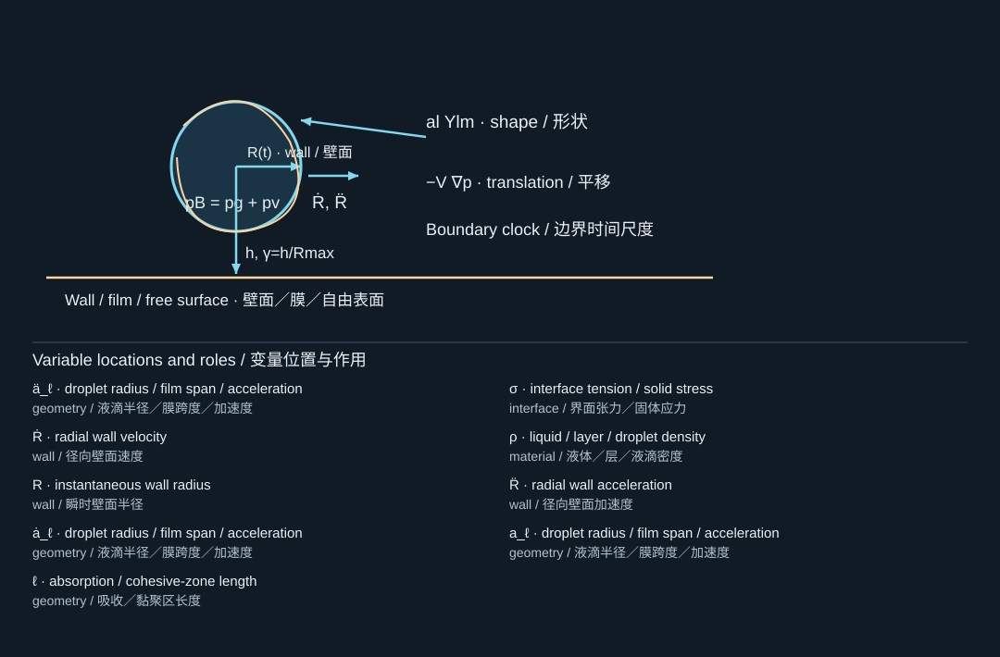
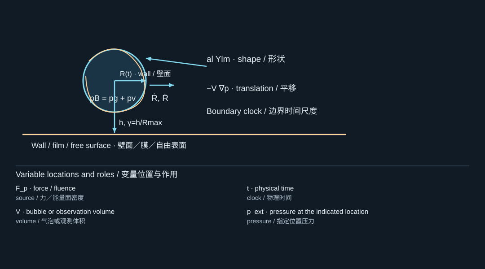

8. Shape, boundaries, and translation
形状、边界与平移
8.1 A radius is not a shape
半径不能代表全部形状
A spherical model contains one geometric degree of freedom. It cannot decide whether the top of a bubble moves differently from the bottom. Once a wall, free surface, neighboring bubble, or localized heating field breaks symmetry, the missing degrees of freedom may control the observable of interest. Agreement in equivalent radius is therefore weaker evidence than agreement in the full interface contour. [S339, S411, S418]
球形模型只有一个几何自由度，无法判断气泡顶部与底部是否以不同方式运动。当壁面、自由液面、邻近气泡或局部加热场破坏对称性后，被忽略的自由度就可能主导目标可观测量。因此，等效半径吻合所提供的证据，弱于整个界面轮廓的吻合。[S339, S411, S418]
Represent a slightly deformed bubble by , with . Here is radial motion, corresponds to displacement of the center at first order, and describes shape deformation. For an inviscid exterior liquid and negligible interior inertia, the linear shape-mode equation is
对于轻微变形的气泡，可写成，且。其中为径向运动，在一阶近似下对应中心位移，表示形状变形。在外侧液体无黏、内部惯性可忽略时，线性形状模态方程为

The diagram locates the physical system; its key lists the symbols in the formula. Read the definition in the surrounding derivation when a letter has different roles.
图示标出物理体系，图例列出公式中的符号。若某字母有多种作用，应以邻近推导中的定义为准。
This result follows by expanding the velocity potential in decaying spherical harmonics, linearizing the kinematic condition, and using the curvature perturbation in the normal-stress balance. It is a local stability model, not an equation for a fully formed jet. At constant radius its capillary frequency satisfies . The coefficients differ from those for a liquid drop surrounded by negligible-density gas, because the inertia is on the opposite side of the interface.
该式可由衰减球谐函数展开速度势、线性化运动学条件，并将曲率扰动代入法向应力平衡得到。它是局部稳定性模型，而不是已形成射流的控制方程。在恒定半径下，毛细频率满足。这一系数不同于低密度气体包围的液滴，因为惯性位于界面的另一侧。
During collapse, is negative and can amplify shape disturbances. The acceleration term can also alter stability. Therefore, neither “surface tension stabilizes everything” nor “all collapsing bubbles remain spherical until the last instant” is a safe assumption. Once is no longer small, equation (8.1) must give way to a nonlinear interface model.
塌缩时，为负，可能放大形状扰动；加速度项也会改变稳定性。因此，不能假设“表面张力能稳定一切”，也不能假设“所有气泡在最后一瞬之前始终保持球形”。一旦不再很小，式(8.1)就应让位于非线性界面模型。
8.2 Stand-off distance and image intuition
离壁距离与镜像直觉
For a bubble near an initially planar boundary, define the stand-off ratio , where is the bubble-center distance to the undeformed boundary. The subscript avoids confusing stand-off with the gas heat-capacity ratio . Also record whether the boundary position moves and whether is measured in the actual bounded experiment or in a separate unbounded reference experiment.
对于靠近初始平面边界的气泡，定义离壁比，其中是气泡中心至未变形边界的距离。下标用于避免与气体比热比混淆。还必须说明边界是否运动，以及来自实际有界实验，还是另一个无界参考实验。
In an ideal potential-flow picture, a rigid no-penetration plane is represented by a same-sign image source, while an ideal pressure-release free surface uses an opposite-sign image. This helps explain the familiar tendency for a collapse jet toward a rigid wall and away from a free surface. It is a limiting intuition, not a universal rule for every stand-off, geometry, or stage of motion. [S339, S355, S411]
在理想势流图景中，刚性不可穿透平面可由同号镜像源表示，而理想压力释放自由面采用异号镜像。这有助于理解塌缩射流通常朝向刚壁、背离自由面的趋势。但这只是极限条件下的直觉，并非适用于所有离壁距离、几何和运动阶段的普遍规则。[S339, S355, S411]
A free surface can rise, close over a cavity, trap gas, and form jets both above and below the original surface. The liquid–gas-interface experiments in [S355] make clear that emitted jets depend on the entire evolving topology, not just an image-bubble sketch.
自由液面可能隆起、在空腔上方闭合、包裹气体，并在原液面上下形成射流。[S355]中的液—气界面实验表明，喷出射流取决于整个演化中的拓扑结构，而不仅仅是一幅镜像气泡示意图。
8.3 Elastic walls have their own clock
弹性壁面有自己的时间尺度
An elastic boundary moves during bubble growth and can return stored elastic energy during collapse. The phase of that return matters. A surface that is displaced strongly is not automatically equivalent to a free surface, and a high acoustic impedance does not automatically imply an immobile structure at all relevant frequencies. Fluid acoustic impedance, plate bending stiffness, membrane tension, inertia, and damping influence different aspects of the response. [S339, S377, S362]
弹性边界在气泡增长时发生运动，并可能在塌缩时释放储存的弹性能，释放相位十分重要。一个发生较大位移的表面，不一定等效于自由面；较高声阻抗也不意味着结构在所有相关频率下都静止。流体声阻抗、板弯曲刚度、膜张力、惯性和阻尼，分别控制响应的不同方面。[S339, S377, S362]
Brujan and colleagues observed complex bubble splitting and jets in both directions near an elastic boundary under their experimental conditions. Orthaber and colleagues show that membrane damage is not a simple monotonic function of decreasing center-to-membrane distance. These results warn against translating rigid-wall rules directly into a PVC or hydrogel system. [S339, S377]
Brujan等人在其弹性边界实验条件下观察到复杂的气泡分裂和双向射流。Orthaber等人的研究则表明，膜损伤并不简单地随气泡中心到膜距离减小而单调增强。这些结果提醒我们，不能将刚壁规律直接移植到PVC或水凝胶体系中。[S339, S377]
A curved rigid surface introduces at least one additional ratio, such as , where is boundary curvature radius. Two experiments with equal stand-off can therefore exhibit different collapse geometries. The curved-boundary source [S411] is a useful bridge from textbook wall intuition to realistic geometry.
曲面刚性边界至少引入一个额外比值，例如，其中为边界曲率半径。因此，即使离壁比相同，两个实验也可能表现出不同塌缩几何。[S411]中的曲面边界研究，是从教材中的平壁直觉走向实际几何的一个重要过渡。
8.4 Pressure gradients and bubble translation
压力梯度与气泡平移
For a small bubble in a slowly varying external pressure field, expand pressure about its center and integrate traction over the surface. Gauss's theorem gives a leading pressure-gradient force
对于处于缓变外部压力场中的小气泡，在中心附近展开压力并对表面牵引积分，利用Gauss定理可得首阶压力梯度力

The diagram locates the physical system; its key lists the symbols in the formula. Read the definition in the surrounding derivation when a letter has different roles.
图示标出物理体系，图例列出公式中的符号。若某字母有多种作用，应以邻近推导中的定义为准。
The averaged expression is the primary Bjerknes-force idea. Its sign depends on the phase relation between volume and pressure gradient, so “bubbles always move toward low acoustic pressure” is too crude for an oscillatory field. The Kelvin-impulse framework organizes the directional momentum of the surrounding flow and helps interpret asymmetric collapse; it should not be confused with the scalar pressure impulse introduced in Chapter 9. [S339]
周期平均表达式对应主Bjerknes力的思想。其符号取决于体积与压力梯度之间的相位关系，因此“气泡总向低声压处运动”的说法对振荡场过于简单。Kelvin冲量框架用于组织周围流动的方向性动量，并帮助理解非对称塌缩；它不应与第9章的标量压力冲量混为一谈。[S339]
8.5 What a spherical model can still contribute
球形模型仍能贡献什么
Even when symmetry will eventually fail, a radial model can estimate growth time, maximum-volume work, and a first approximation to the forcing timescale. Use those results as scales or initialization information, not as a substitute for the missing shape dynamics. A practical warning observable is the ratio of fitted horizontal to vertical bubble dimensions; another is movement of the centroid relative to . State the tolerance you accept before reducing images to one radius.
即使对称性最终会失效，径向模型仍可估计增长时间、最大体积压力功和初步加载时间尺度。但应把这些结果作为尺度或初始化信息，而不是替代缺失的形状动力学。实用的预警量包括气泡水平与竖直尺寸之比，以及质心位移相对于的大小。在将图像压缩为单一半径之前，应明确可接受的偏离程度。